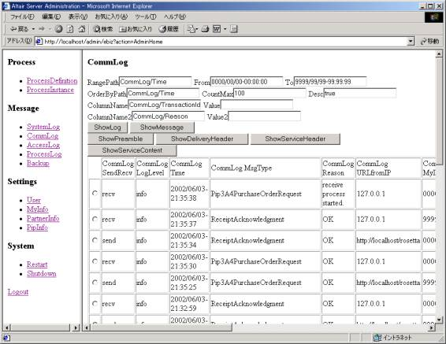

管理画面
第0.43版 2016年10月23日
第0.27版 2002年 6月19日
管理画面に入るためのログイン画面です。
デフォルトでは URL http://localhost/admin/ を開き、
ユーザID: admin、パスワード: admin でログインします。
管理画面にログイン後、最初に現れる画面です。
フレームの左側のペインがメニューになっています。
登録してあるプロセス定義の内容とデフォルトのプロパティを参照する管理画面です。
実行中のプロセスインスタンス一覧の表示や、
指定したプロセスインスタンスの内容とプロパティ一覧を参照する管理画面です。
プロセスのステータス等を指定しての検索もできます。
システムログの参照画面です。
期間指定、カラムの値を指定しての検索、キーワード検索などもできます。

通信ログの参照画面です。
期間指定、カラムの値を指定しての検索、キーワード検索などもできます。

アクセスログの参照画面です。
期間指定、カラムの値を指定しての検索、キーワード検索などもできます。
プロセスログの参照画面です。
期間指定、カラムの値を指定しての検索、キーワード検索などもできます。
メッセージデータやログのバックアップ、削除、リストアを行う管理画面です。
期間指定やバックアップ対象を指定することができます。
管理UIにログインするユーザや、アプリケーションにログインするユーザの
ユーザ管理を行うための管理画面です。
自社サーバ情報の設定を行う管理画面です。
パートナー情報の設定を行う管理画面です。
使用するPIPに関する情報を設定する管理画面です。